💡 Recommendations Visualizations
Supporting Evidence for Each Recommendation
← Back to DashboardRecommendation 1: Review and Prevent Liquidating Working Items
Key Details
Priority: HIGH | Timeline: 1-2 weeks | Impact: $8,919 recovery
Items that pass "Does it work?" should rarely be liquidated. Currently, 7 working items were liquidated.
Check Failure Rates Comparison
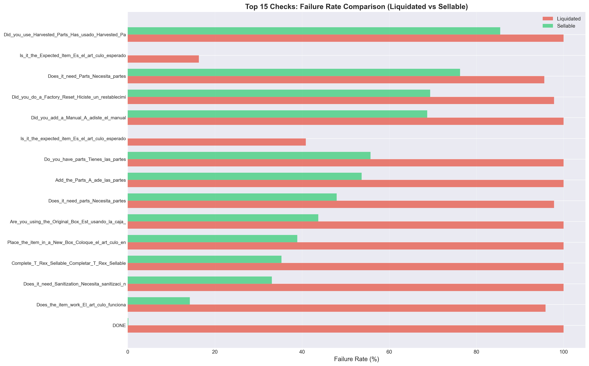Shows "Does it Work?" check has 72.9 percentage point difference between passed/failed
Passed vs Failed Comparison
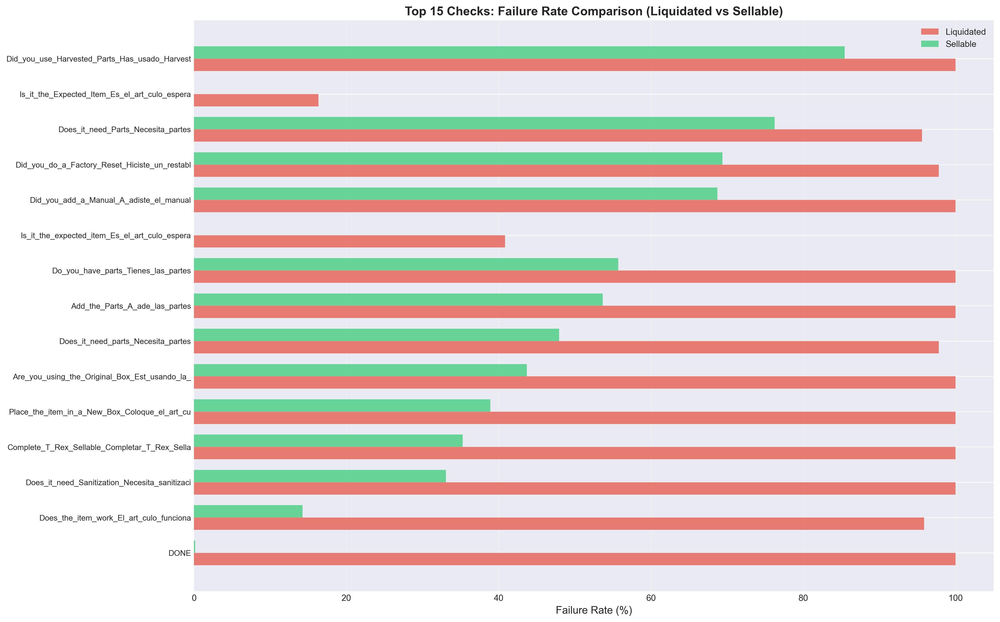Evidence of items that passed checks but were still liquidated
Check Comparison

Detailed comparison showing working items being liquidated
Recommendation 2: Implement Exception Handling for High COGS Items
Key Details
Priority: HIGH | Timeline: 2-4 weeks | Impact: $24,336 recovery
Create exception rules for items with COGS >= $2,000 that pass "Does it work?" check.
High COGS Patterns
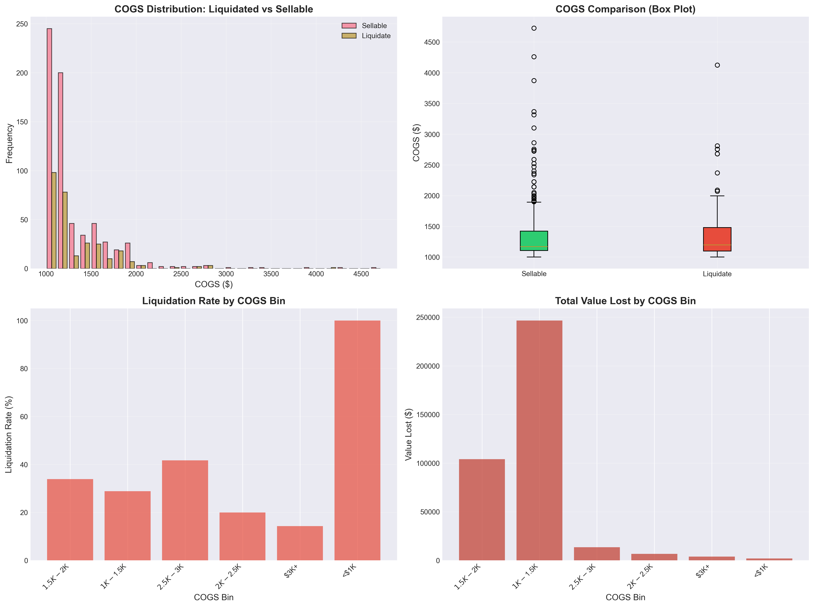Analysis showing high COGS items liquidation patterns
Liquidation Rate by COGS Bin
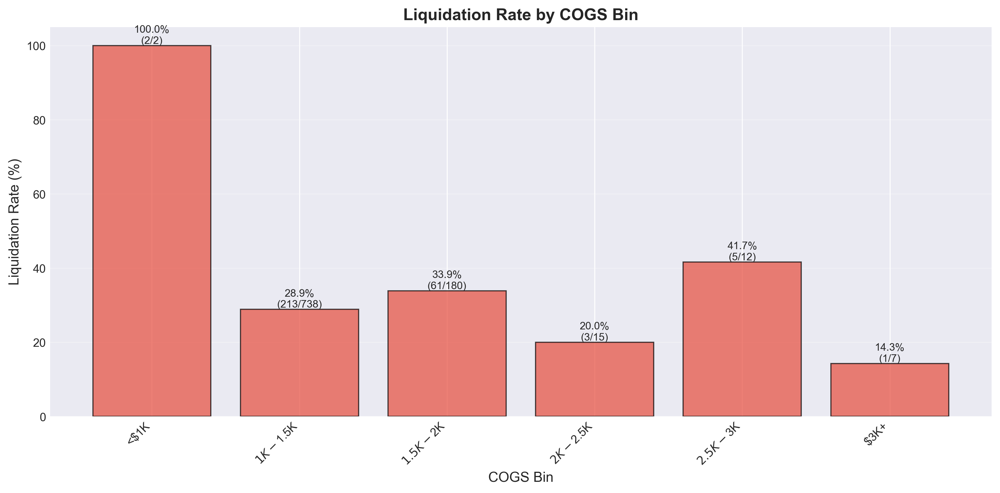Lower liquidation rates for higher COGS items (26.5% vs 30.0%)
COGS Distribution
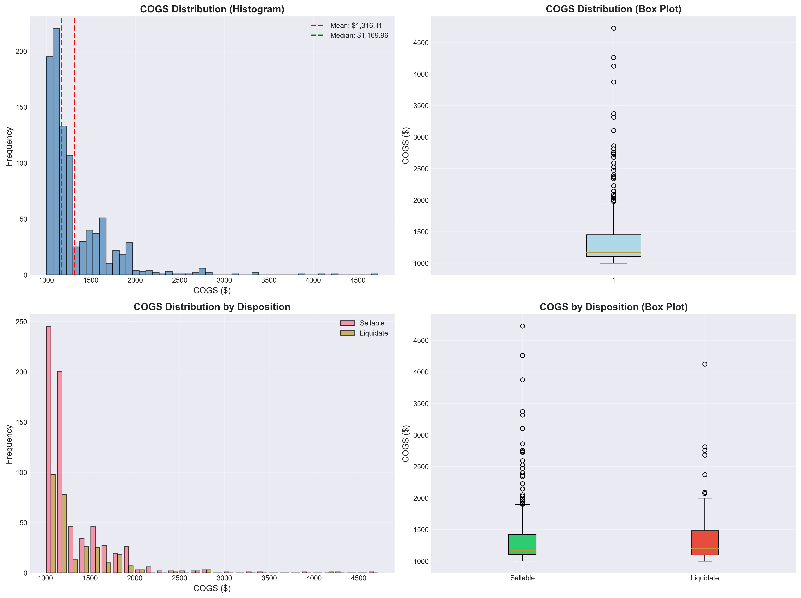Distribution showing high-value items being liquidated
COGS by Disposition
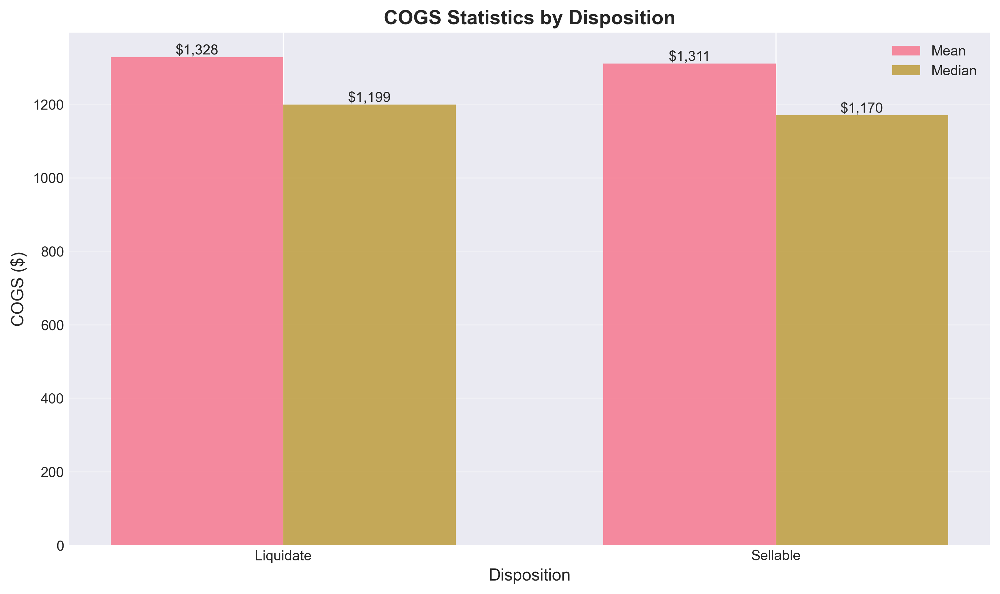Comparison of COGS values between liquidated and sellable items
Recommendation 3: Implement Recovery Process for Working Liquidated Items
Key Details
Priority: HIGH | Timeline: 2-3 weeks | Impact: $8,919 recovery
Create process to recover working items that were liquidated.
Passed vs Failed Comparison
Shows items that passed "Does it Work?" but were liquidated
Check Failure Rates
Evidence supporting recovery of working items
Recommendation 4: Review and Relax Cosmetic Check Criteria
Key Details
Priority: MEDIUM | Timeline: 2-3 weeks
Cosmetic checks have 79.6% false positive rate - items that failed cosmetic checks were still sellable.
Check Failure Rates Comparison
Shows cosmetic checks have high failure rates but low liquidation correlation
Detailed Check Comparison
Detailed comparison showing cosmetic checks false positive pattern
Check Failure Rate Heatmap
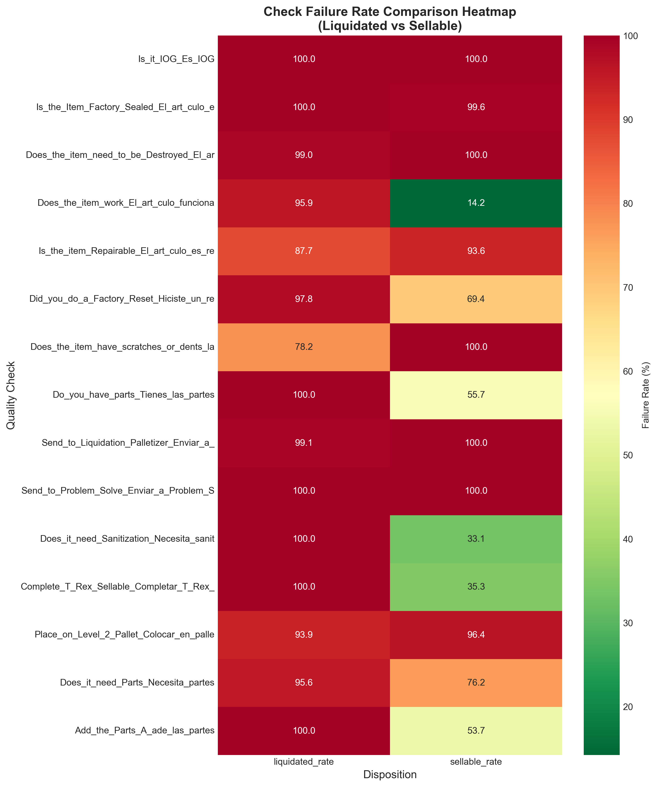Heatmap showing cosmetic checks vs liquidation correlation
Recommendation 5: Review Category-Specific Quality Standards
Key Details
Priority: HIGH | Timeline: 4-6 weeks
13 categories have >=80% liquidation rate, representing $111,402 in value lost.
Liquidation Rate by Category
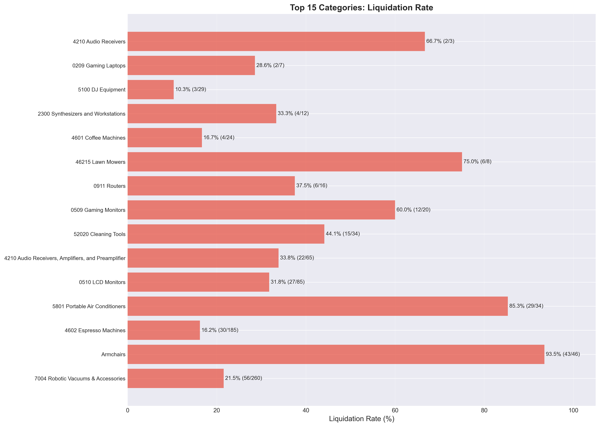Top categories with highest liquidation rates
Value Lost by Category
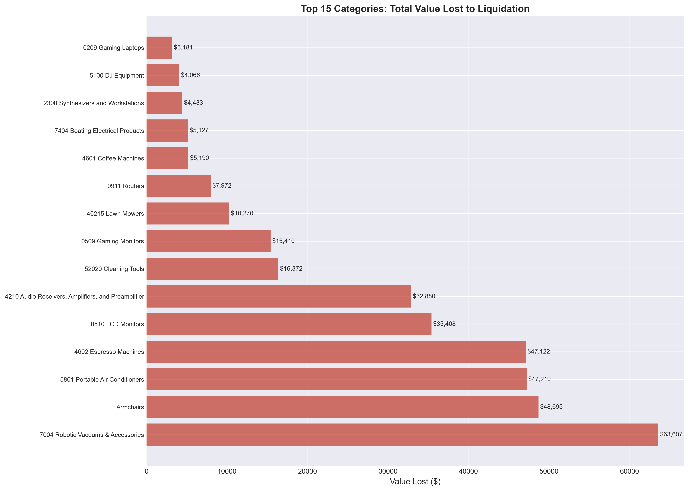Financial impact by category - prioritizing high-value categories
Categories Most Affected
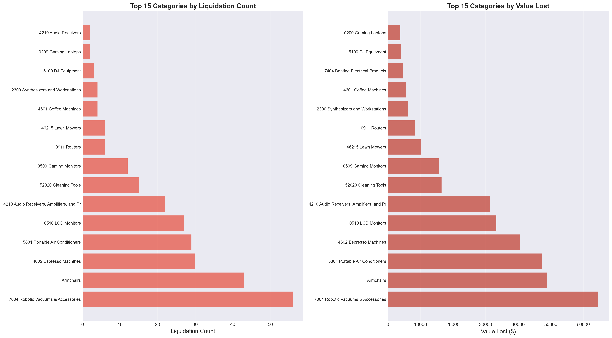Categories most affected by liquidations
Category Liquidation Analysis
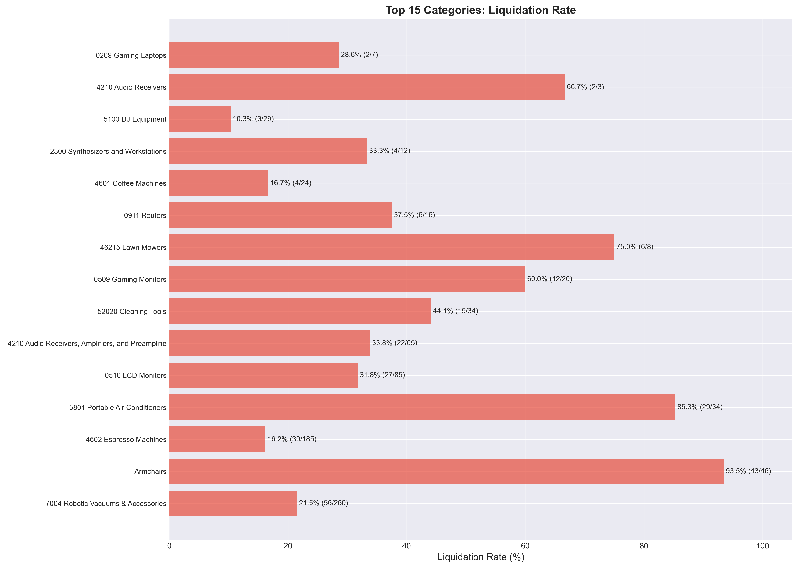Detailed category-level analysis
Category Disposition Pivot
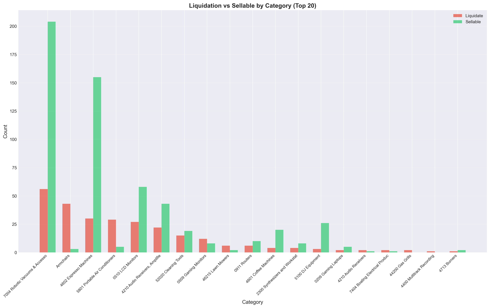Category-level disposition breakdown
Recommendation 6: Modify BPMN Process Flow
Key Details
Priority: HIGH | Timeline: 4-6 weeks
Update BPMN to incorporate exception handling and improved decision logic.
Top Checks Causing Liquidations
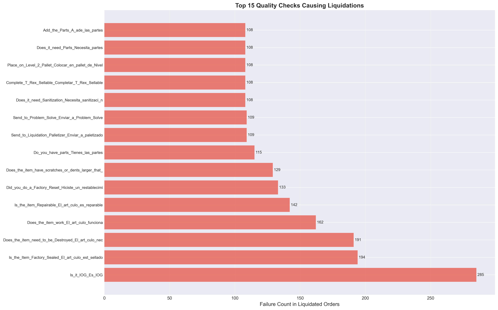Key checks that drive liquidation decisions - priority for BPMN modifications
Quality Checks Causing Liquidations
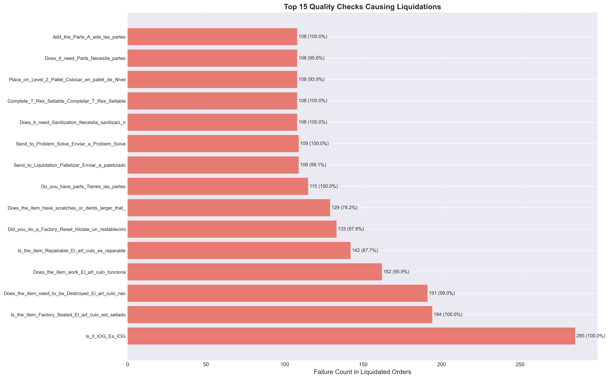Top quality checks causing liquidations - focus areas for process improvement
Check Failure Rate Heatmap
Check failure rate patterns - informing BPMN decision logic
Top Failed Checks
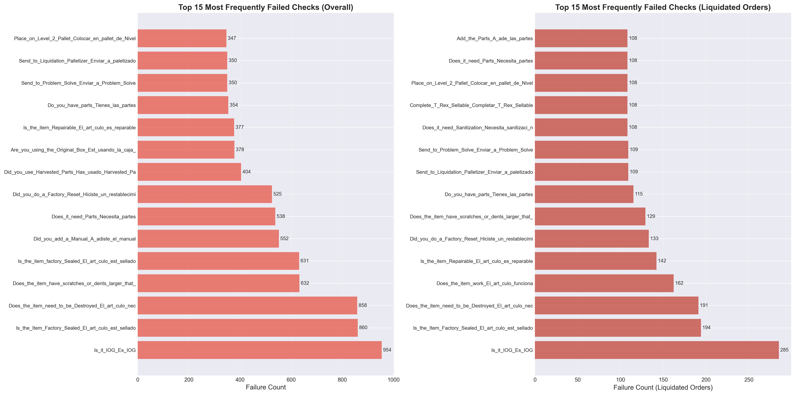Most frequently failed checks - critical for BPMN flow design